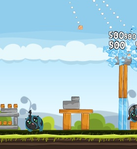
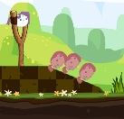

Angry Birds, but 20% cooler. For Google Chrome and Firefox.
Angry Ponies! ← Drag to your bookmarks bar!
Then, click it in your bookmarks bar twice: once on this page to go to chrome.angrybirds.com, and again as soon as that page begins to load, to refresh it with pony content!
If you're having trouble dragging the bookmarklet to your bookmarks bar, Pinterest has video tutorials for all modern browsers. Note that the bookmarklet may take a few seconds to work.
Step 1: Install the Google Chrome extension. Or the (experimental) Firefox add-on!
Step 2: Play Angry Ponies at chrome.angrybirds.com!
Don't worry, this extension won't do anything evil, it just inserts a script into chrome.angrybirds.com. If you're worried, feel free to browse the source code.
Ever wanted to launch a chubby Rainbow Dash from a slingshot, then Sonic Rainboom through a wall to destroy Queen Chrysalis? Well, if you have Google Chrome or Firefox, now you can, with a simple, open-source browser extension!
 
Chubby pony graphics from PhantomDarkLover and WillDrawForFood. Intro music by Alex S. Code released to the public domain.
This is just a technical demo for what kinds of mods are possible. There are still a lot of birds and pigs to make into ponies and changelings!
If you'd like to contribute artwork or sound design to make this more awesome (please do!), or would like to port the extension to a different browser, all instructions on how to contribute are at Github. Instructions for non-technical bronies as well!